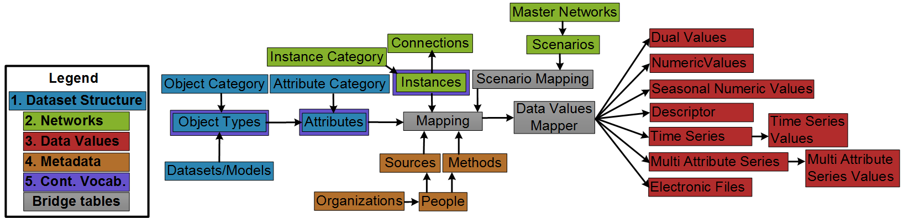

Logical Data Model¶
Why the Relational Model?¶
We chose the Relational Model for three reasons:
i) it supports conditional data queries that meet the seventh design requirement
ii) it is platform independent as it can be implemented on different operating systems using different relational database systems
iii) it supports a standardized and stable Structured Query Language (SQL) compared to recent NoSQL languages like Graph Database

Schema¶
WaMDaM schema or entity relationship diagram is available at this interactive site. Check out the interactive schema Schema
Mapping many-to-many relationships¶
First, we decided that a Dataset may have zero or many Object Types and an Object Type could have zero or many Attributes. An Object or Attribute Category may apply to zero or many Object types or Attributes, respectively. We simplified the potential many-to-many relationship between Datasets and Object Types, between Object Types and Attributes, and between Object Types and Category to each to become one-to-many. The simplification is based on the use cases above and data sources we worked with later in Section 4. Thus we do not directly support the following cases: an Attribute with its unit to belong to many Object Types, an Object Type to belong to many Datasets, an Object to belong to many Categories, or an Attribute to belong to many Categories. Using one-to-many relationship here could lead to less data storage efficiency, but it has a simpler design and more importantly an easier query syntax than earlier designs (Abdallah and Rosenberg, 2014). Future work may reevaluate this tradeoff for other data sources and use cases.
Second, an Object Type can have zero or many Instances and each Instance inherits all the Object Attributes. An Attribute for a specific Instance then can have metadata and data values. An Attribute can only have one Data Type (e.g., time series or numeric value). We discuss metadata later in this section. A Network can have one or many Scenarios. A Scenario contains all the Instances, their Attributes, and Attributes Data Values and Metadata. A Network has a spatial reference and elevation datum. Within a Scenario, an Attribute of an Object Type can be associated with many Instances of the same Object.
At the same time, an Instance can have many Attributes of its parent Object Type. The “Mapping” bridge table handle this many-to-many relationship between Object Types, Instances, and Attributes. For example, a Reservoir Object Type can have many attributes like volume and elevation. At the same time, there could be dozens of local reservoir instances where each of them has specific volume and elevation values. Instances of a parent Object Type can be accessed through a dummy Attribute for each Object Type called “ObjectInstances” which requires a software business rule to create it. We avoided connecting the Object Types table directly to the Instances table because it creates a circular reference problem as in an earlier preliminary design (Abdallah and Rosenberg, 2014). A circular reference in the database may allow two non-unique transaction paths to insert or delete data values which is problematic to the database integrity that requires a one unique transaction path (Connolly and Begg, 2010).
The “Scenario Mapping” bridge table handles the many-to-many relationship, where an Attribute for an Instance can belong to many Scenarios, while a Scenarios can have many combinations of Attribute and Instances. For example, the same reservoir inflow time series can belong to the “current” and “future” scenarios, while the “current” scenario can have many other reservoir attributes. Finally, the “Data Values Mapper” bridge table maps the relationships where an Instance and its Attribute can have many data values, while a Data Value can belong to many other Instances
Here we generally refer to a Data Value being the whole block of time series or multi column array. The Mapping bridge table is the central table in WaMDaM where data values for different formats are connected to their Attributes, metadata, Instances, and Scenarios. When two Scenarios share the same combination of network topology (i.e., nodes and links), metadata, and data values, they are referenced (i.e., reused) from the Mapping table into the “Scenario Mapping” bridge table with no duplication of data values storage. Later in the sixth use case in Section 4, users will use the Scenario Mapping table as a basis to compare similarities and differences of scenarios for the same network. This key design aspect is very important to allow version control and comparison between many scenarios within the same network as they often share most of the base scenario with some changes.
Normalized Design¶
We used the database normalization technique which designs the data model in an effort to eliminate redundancy and increase design generality and parsimony in a in three main areas: metadata, node and link instances, and multi-attributes series (Connolly and Begg, 2010).
First, in prior approaches, metadata of organizations, people, sources, and methods are sometimes represented in one table which accepts a generic definition of metadata like in HydraPlatform (Meier et al., 2014) and HarmoniRib (Refsgaard et al., 2005).
Although such generic design can accommodate uncertain data metadata structures but the tradeoff is harder capabilities to directly query and access the metadata. In WaMDaM we divided metadata into separate required tables. We intended to keep a structure of formality to allow persistent access to its data and metadata. Therefore, the querying method to manipulate and compare data will be persistent across the used data sources or study area boundary. A persistent data model provides an opportunity to build software tools and programming workflows to read data from and write to a known structure (Maidment, 2002).
Second, the WaMDaM design presented here also normalized how prior approaches represented separate node and link tables into one shared Instances table and another Connection sub-table as introduced earlier in the conceptual design. Since the node and link instances have similar attributes, the Instances table represents both of them and the connectivity between them in another sub-table. The Connection sub-table only represent the unique start and end nodes for link Instances. Importantly, the Instances table allows users to use the same query to access data values for either nodes or links. The tradeoff of this simplicity requires a software business rule to enforce the integrity of connectivity between nodes and links. A software business rule needs to insure that a link must have a start and end nodes.
Third, we separated time series and multi-attribute series data types into two tables each. Each type has a table for additional specific metadata that apply to the second table with data values. In both types, we adapted the concept of Network Common Data Form (NetCDF) the Open Geospatial Consortium (OGC) Core Encoding Standard (OGC, 2011). NetCDF defines its dataset with global metadata (e.g., source of NetCDF file) and then defines local metadata (e.g., unit of variable) and data values (Gan et al., In Preperation). Next, we discuss how the design represents data values for the data types.
Mapping data types¶
An attribute of a node or link instance can have one or many values in each data type. A data value can be shared among many Instances. The same data value (s) for an attribute also can be shared between two scenarios without duplication. Next we elaborate on the specific aspects in each data type.
Dual Values and Numeric Values¶
The Dual values table mange the actual values either zero or one and allows users to optionally register this value with a controlled Dual Value Meaning attribute that takes values like “Active” or “Inactive” with a definition for each. The numeric values table strictly manage numeric values only.
Seasonal Numeric Values:¶
This table manages numeric values that change with categorical time defined here as a season name. Users may optionally register the season name with a controlled term. Then they can provide a numeric value for each season name as much as needed. For each record of season name and value, there is a season order field to preserve the seasons and data values order as they are entered which can also be used to sort the season values.
Descriptor Values:¶
The design allows users to store values like “hydropower” and optionally register them with controlled vocabulary. The same field also allows users to store any descriptive text. Earlier design had two separate “controlled” and “free” descriptor tables which could be confusing to users to choose from (Abdallah and Rosenberg, 2014). The same attribute can have multiple descriptor values. For example, “purpose” of Hyrum Reservoir takes the values of “Hydropower”, “Recreation”, and “Irrigation”. While the same “purpose” value can be shared across other reservoirs leading to one unique value stored for the entire reservoirs dataset.
Time Series:¶
The first table in time series data captures additional key global metadata for the entire block of time series: i) Begin and End Date/Time fields which represent the extent of a time series, ii) Year Type to specific whether it is a “water year” or “calendar year” as both of them are used in water management datasets, iii) Aggregation Statistic which is a vocabulary for describing the calculated statistic over an Interval associated with recorded observations (e.g., average, cumulative)., and vi) an Aggregation Interval which indicates the time period of the aggregation statistic (e.g., 1) within an Aggregation Interval Unit (e.g., day, month). The second table records data values and their time stamp. The reviewed water management models and used datasets are often derived and curated time series data which does not report metadata to each individual time series value, therefore WaMDaM does not support such micro metadata. WaMDaM is not intended to replace the specialized time series database systems like CUAHSI but rather to consume data from them. Separating time series metadata from the individual values is also more practical to water management use cases in the in attempt to balance between the principles and practicality of metadata usage as recommended by Duval et al. (2002) as mentioned earlier.
Multi Attribute Series¶
The first table MultiAttributeSeries stores the attributes that constitute the array along with their metadata of source, method, and unit. The second table MultiAttributeSeriesValues stores data values and their sequential order for each attribute. The sequential order field preserves the order and pairing of data values across many attributes within the same array. Data values of the multi attribute series are flexible to have numeric or text values which allows storing a wide range of related descriptive and numeric values for many cases. Future work based on use cases may identify the tradeoff of this flexibility on maintaining the integrity of stored values. Each attribute or column has its metadata and data values and can be accessed by itself or with the other columns. As part of the normalized design of these two tables, a MultiAttributeSeries can take as many attributes (i.e., columns) and data values. Both the MultiAttributeSeries attribute and each sub-attribute may optionally be registered with controlled vocabulary terms.
Electronic Files¶
Users could attach copies like images, maps, csv, and text files to an attribute with this defined data type. They are stored as Binary Large OBject (BLOB) in the database. We added a controlled vocabulary called Electronic File Format that has the list of supported and defined physical formats to help users understand the type of file and how to open it.